제공 PDF + 8/24 여섯 교정 · 공개 보도·공시 기준 · 매수·매도 추천 아님
원본: lectures/sources/20260825_market_strategy_report_korean_font_fixed.pdf · 바이백 창 9/9 [확인], PDF 첫 매입 9/10 · NVIDIA 공식 콜 8/27 06:00 KST
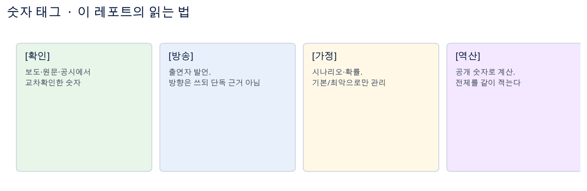
| 항목 | 쓰면 안 되는 말 | 고쳐 쓸 말 |
|---|---|---|
| 마이크론 150% | 산업 전체 50% 부족 | 데이터센터 요구량 ÷ 마이크론 확약 가능 공급 ≈ 1.5배 |
| MCP · HBM · DDR5 | 셋이 같다 | 통관 분류 ≠ 제품 ≠ 세대 규격 |
| NVIDIA 15% | GPU ASP +15% | AI 칩 탑재 서버 시스템 가격. Bloomberg |
| 광고 노출률 | 검색 1/3, ChatGPT 전체 26% | 미국 상업성 표본 29.45% · 25.94% |
| OpenAI $3~$5 | 실제 CPC | 권장 최대 CPC 입찰가 |
| SDD | 90% 경량화 | 중국 제품 무게의 약 90% = 약 10% 경량화 |
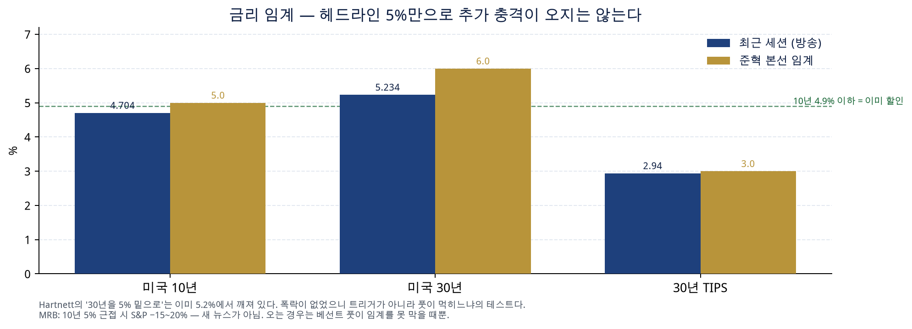
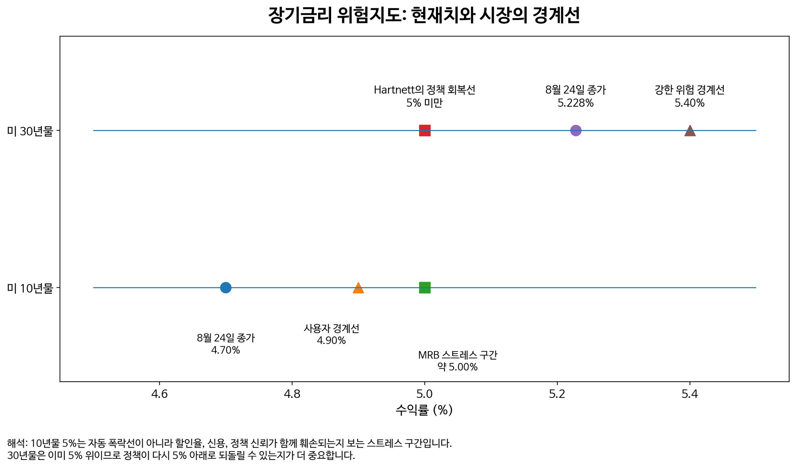
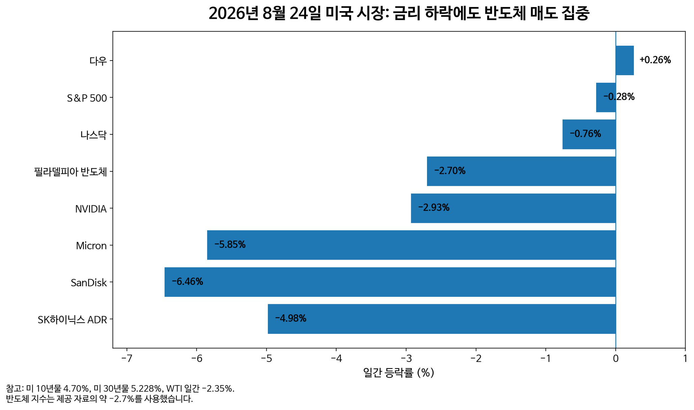
8/24는 금리가 빠져도 메모리가 더 팔린 세션이다 [방송]. FY2025 순이자 $970.4B > 국방 $916.6B [확인]. Ferguson’s Law [확인].
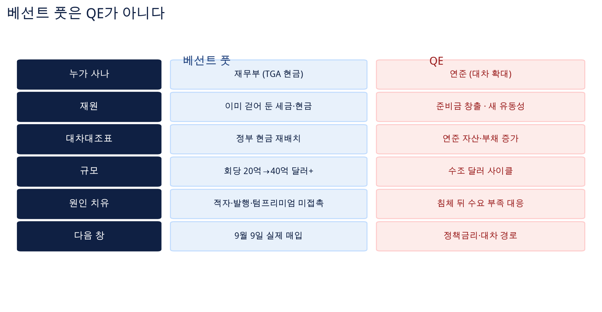
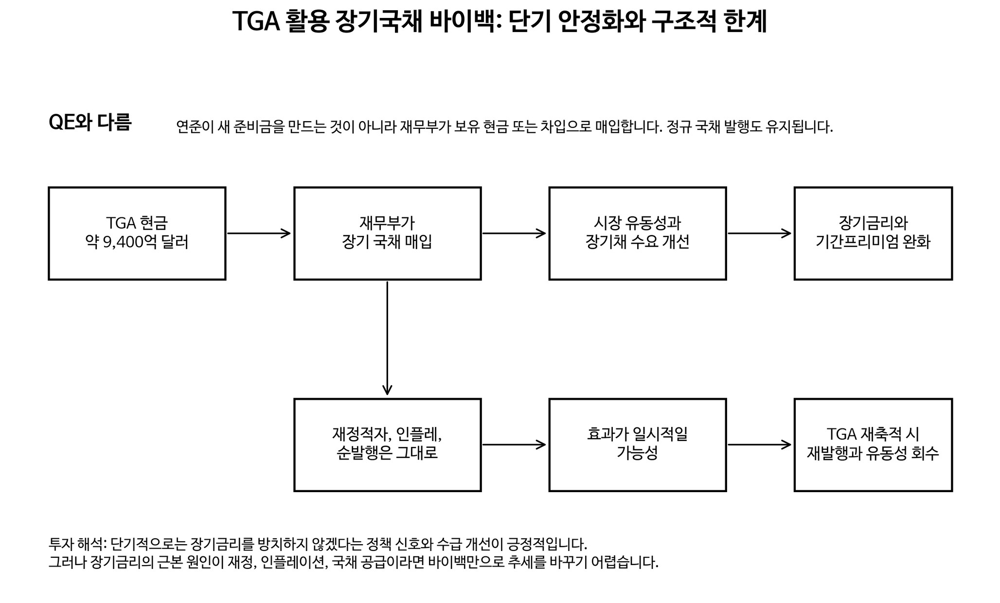
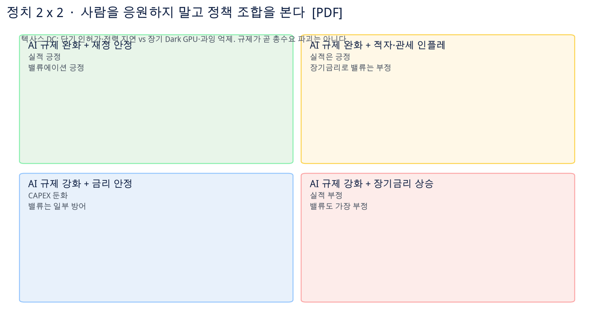
규제 완화만 호재가 아니다. 텍사스 DC는 단기 지연과 장기 Dark GPU 억제를 같이 본다.
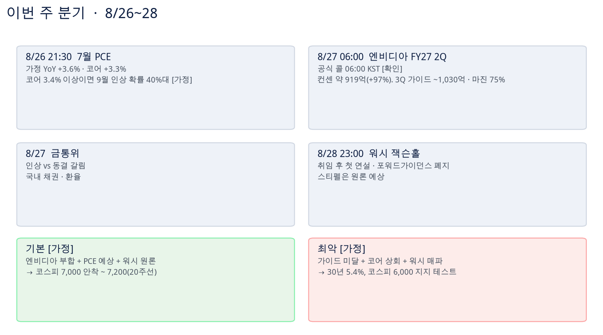
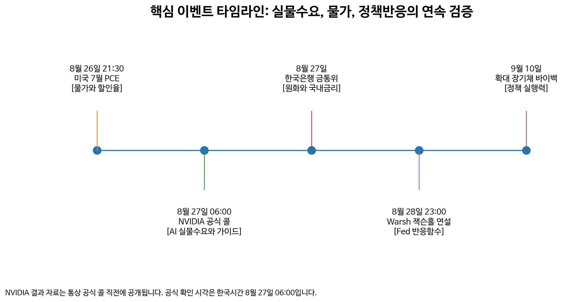
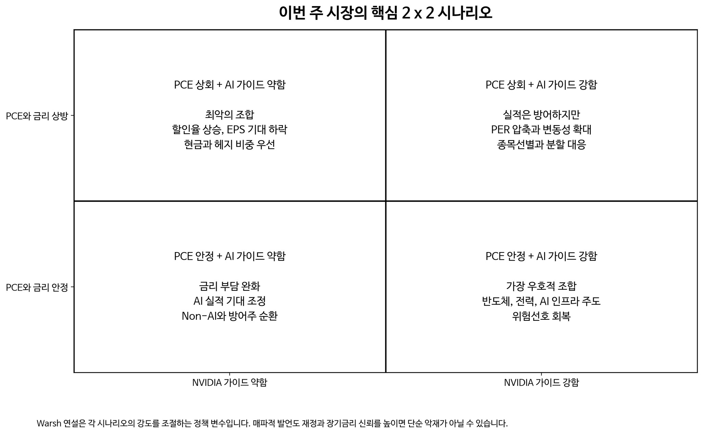
| 창 | 숫자 | 태그 |
|---|---|---|
| 8/26 21:30 PCE | 가정 +3.6% / 코어 +3.3% | 가정 |
| 8/27 06:00 NVIDIA 공식 콜 | 컨센 $91.9~92.1B(+97%), 가이드 $91.0B±2%, 3Q ~$103~103.8B, 마진 ~75% | 확인 |
| 8/27 금통위 | 인상 vs 동결 | 가정 |
| 8/28 Warsh | 취임 후 첫 연설. 스티펠 원론 | 방송 |
| 9/9 바이백 | 실제 호가와 실행력 | 확인 |
Needham SKHY $220 · Rosenblatt NVDA $325 [확인]. 기본 7,000~7,200 / 최악 30년 5.4%·6,000은 [가정].
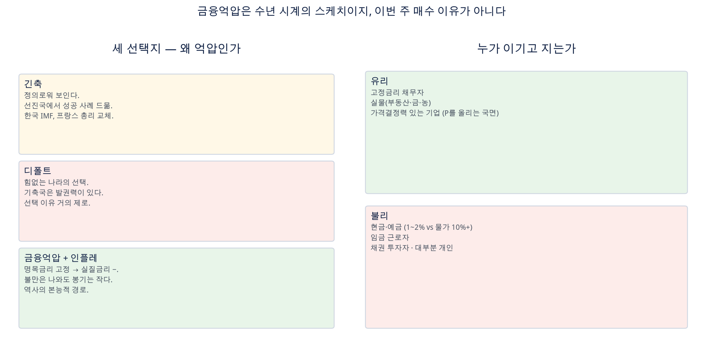
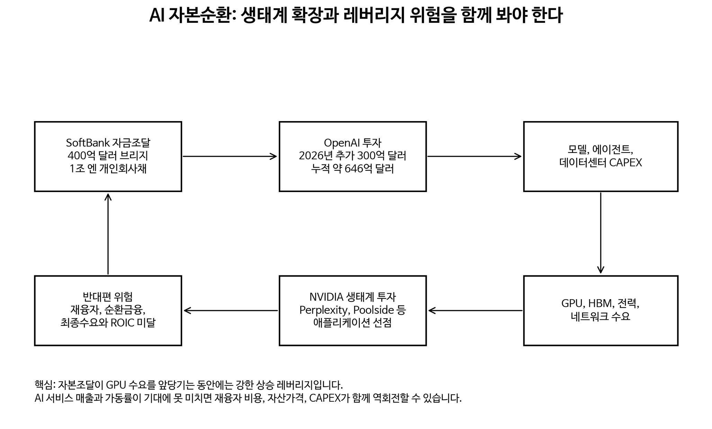
소프트뱅크 1조 엔 · 7년 4.3~4.9% · OpenAI $60B+ [확인]. 추가 $300B / $646B / 13% / 3월 $40B 브리지 [방송].
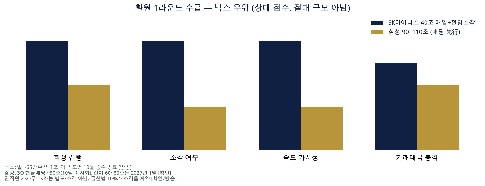
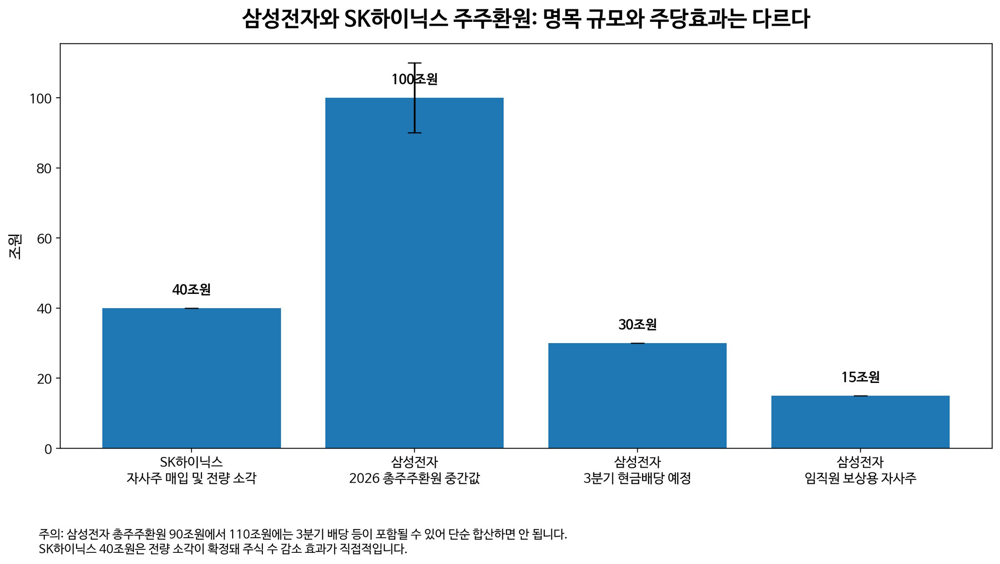
7월 코스피 월간 약 −28.9%, 고점 대비 약 −33.9%, 외국인 순매도 약 17.9조 [확인]. 90~110조에 30조를 더하면 안 된다.
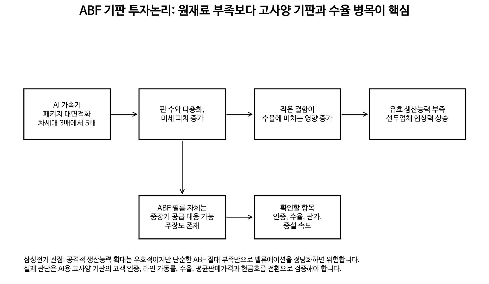
ABF는 필름 절대부족이 아니라 고사양 기판의 수율·유효 CAPA다.
| 기준 | 로보티즈 | 에스피지 |
|---|---|---|
| QDD 직접성 | 높음 | 초기 |
| 실적 방어 | 2026E 적자 | 모터·감속기 본업 |
| 밸류 전제 | 2027 SPS × P/S 42.3배 | 2029 EPS × 60배 |
| 무게·물량 | — | 무게의 90% = 10% 경량화. 5,000대는 목표 |